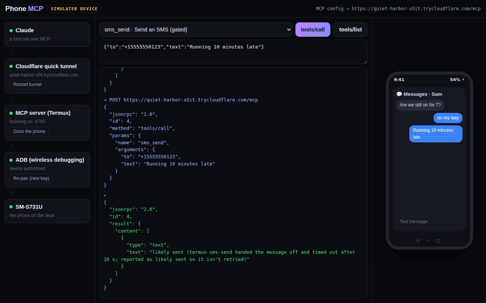

Tunnel
A Cloudflare Quick Tunnel gives a throwaway https URL with no account. It's convenient, but the hostname changes on every restart, so the MCP config goes stale without warning.
A model on the internet driving a real Android phone: MCP over a Cloudflare tunnel, into ADB, onto the device. Four links, and every one of them can break in its own unhelpful way.
A live console: send the tool calls a model sends, break the links, watch the errors

Nothing here is a managed service. It's a tunnel to a server to ADB to a phone, and each junction fails differently. A stale tunnel hostname looks like a 404. A dozing phone looks like a network fault. A revoked ADB key looks like the server is down. Phone MCP exists to make all of it legible, and the console below lets you break each link on purpose and read the error a model would actually get.
A Cloudflare Quick Tunnel gives a throwaway https URL with no account. It's convenient, but the hostname changes on every restart, so the MCP config goes stale without warning.
Tool schemas wrap shell invocations, and the schema is the contract: a vague description gets a model confidently calling the wrong tool.
Authorisation is per host key and lives on the phone. Wireless debugging re-pairs after a reboot, and until someone taps "allow" every call is unauthorized.
Doze and battery optimisation kill background listeners without telling anyone. It looks like a network fault and isn't.
The laptop left the chain. The current server runs in Termux on the phone itself and talks to its own ADB over wireless debugging, so the tunnel, the server and the device are now one object in your pocket.
No SDK. MCP is implemented by hand as JSON-RPC 2.0 over both transports: legacy HTTP+SSE and single-endpoint Streamable HTTP. The official Python SDK was out because its cryptography dependency ships a broken native wheel on Termux's Python 3.14.
Screenshot, tap, swipe, type, key events, launch and list apps, the foreground app, SMS send and list, battery, GPS, clipboard read and write, notifications.
The SMS quirk: termux-sms-send often hands the message off and then hangs. A timeout is reported as likely sent, never as failed, so the model doesn't retry and double-text someone.
Auth is a formality: some clients refuse a server without OAuth discovery metadata, so there's a spec-shaped OAuth layer that approves everyone, and its header comment says so. The tunnel URL is the only real secret.
Screen capture, input injection, app launching, file transfer and log access. ADB was built for developers holding their own hardware, and all of that is now reachable from a chat window.
The phone, the tunnel and the endpoint are all mine; none of this generalises to a device you don't own. Inspection tools are safe to call freely. Anything that sends, injects or moves files gets a gate, the same way Pi gates SMS.
The console is a simulation: the phone, the tunnel and the errors are scripted from the real command set, and every failure shown is one the real chain produced. An unauthenticated Quick Tunnel URL is a credential (anyone with the string has the phone), so the real answer is a named tunnel behind an access policy. The server holds no session state; killing the tunnel removes the whole capability, which is the intended off switch.
Pi is a model living on the phone reaching outward. This is a model living outside, reaching in.
more in ai & mindskeep scrolling · it opens right here